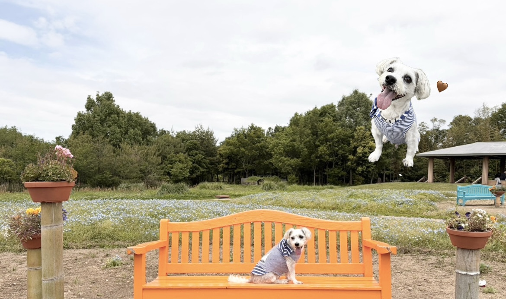

チャッピーの魅力を徹底調査
チャッピーの日常やお気に入りをまとめた観察サイトです。 もふもふ生物・チャッピーを調査せよ！
プロフィール
- ジャックラッセルテリアとマルチーズのハーフ犬
- 男の子
- 2015年5月22日生まれ
- 京都生まれ・静岡県・愛媛県育ち
好きな食べ物
チーズ、さつまいも
性格
- 甘えん坊度 ：★★★★★（特に朝と夜に甘えてくる）
- 食いしん坊度：★★★
- いたずら度 ：★★★
- 運動好き度 ：★★★（とても足が速い）
- 賢さ ：★★★★★（人間の言葉をある程度理解している）
チャッピー豆知識
- 若いお姉さんのことが大好き
- 芝生を見るとテンションが上がる
- 「お水飲む？」「お散歩行こ」などの言葉を理解している
- テレビに犬が映ると反応する
- 犬が登場するCMをすべて覚えており、流れる前になると待機している
- 家族の名前と顔を一致させて覚えている
- 布団を独占してくる
- 服を着るのが大嫌い
- お風呂が苦手（水が嫌い）
背景画像について
サイトの雰囲気に合わせて背景画像を変更しました。
更新履歴
- 2026/7/21 背景画像を変更しました